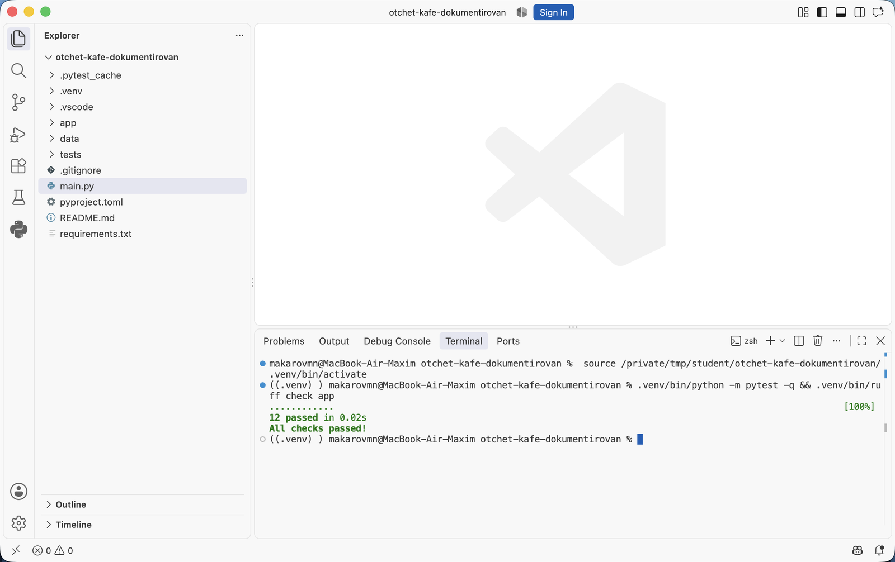

Аннотации типов и документация кода · МДК.01.01 · разработка программных модулей
Глава 4.10
Практика
и домашнее задание
В этой главе две работы. На паре документируется проект после практики по аннотациям: тела функций в нём писал не студент, и поэтому сразу видно, каких сведений в коде не хватает. Домашняя работа — своя папка lesson_04 в личном репозитории дисциплины: докстринги во всём пакете, включённая проверка и собранная справка. В конце — критерии оценки и порядок сдачи.
- Категория
- Практика
- Время на паре
- Около 60 минут
- Формат
- Google, проверка Ruff
- Результат
- Задокументированный пакет и пройденная проверка
§1Работа на паре: чужой модуль
Берётся проект «Отчёт кафе» в том виде, каким он стал после практики в главе 4.4: аннотации расставлены, описаний нет ни одного. Если практика сделана, работа продолжается в своей папке; если нет — во втором архиве. Задача: задокументировать пакет app/ целиком и довести проверку Ruff до чистого вывода.
Тела функций в проекте писал не студент, и для этой работы это полезно. В своём коде описание пишется по памяти, и пропущенное условие заметно не сразу. В чужом коде приходится открывать тело функции, чтобы выяснить единицы измерения суммы, поведение на пустом списке и порядок значений в возвращаемой паре. Эти сведения и переносят в докстринг.
| Что нужно на паре | Откуда взять |
|---|---|
| Проект | Своя папка после главы 4.4 или второй архив — кнопка выше |
Окружение .venv с Ruff и mypy | pip install -r requirements.txt — оба перечислены в списке зависимостей |
| Расширение-генератор | njpwerner.autodocstring, глава 4.9 |
| Образцы описаний | Двенадцать случаев из главы 4.8 |
§2Порядок выполнения
- Откройте в VS Code свою папку после главы 4.4 или распакованный второй архив.
- Создайте окружение и установите зависимости:
python3 -m venv .venv, затем.venv/bin/pip install -r requirements.txt. Ruff, mypy и pytest перечислены вrequirements.txt. - Запустите проект:
.venv/bin/python main.py. Отчёт должен напечататься — дальше это поведение менять нельзя. - Запустите тесты и проверку типов:
.venv/bin/python -m pytest -q— проходят двенадцать,.venv/bin/mypy app—Success. Так подтверждается, что работа начинается с того места, где закончилась первая часть темы. - Откройте
.vscode/settings.json: формат докстринговgoogleв нём уже задан, как в главе 4.9. Если параметра нет, добавьте его. - Проверьте, что в
pyproject.tomlвключены набор"D"и конвенцияgoogle. Запустите.venv/bin/ruff check app --output-format=conciseи сохраните вывод: это перечень мест, которые предстоит закрыть. В стартовом архиве их33. - Задокументируйте модули: первой строкой каждого файла — за что он отвечает и чего в нём нет.
- Задокументируйте публичные функции. Для каждой найдите близкий случай из главы 4.8 и держите его рядом.
- Отдельно пройдите по функциям, которые возбуждают исключения, пишут файлы или меняют переданный объект: добавьте разделы
Raises:иNote:. - Добавьте докстринг пакета в
app/__init__.pyс перечнем вложенных пакетов и точкой входа. - Запускайте
ruff check appпосле каждых двух-трёх функций, пока вывод не станетAll checks passed!. - Выполните
python -c "import app.services.orders as m; help(m)"и прочитайте получившуюся справку подряд. Места, где описание непонятно без кода, перепишите.
Вывод help() — та же документация без вёрстки. Если по ней вызвать функцию нельзя и приходится открывать исходник, описание неполное. При чтении докстрингов прямо в файле рядом виден код, и пропущенное условие восполняется по нему незаметно для самого читателя; в выводе help() кода нет, поэтому пропуск виден.
§3Что сдаётся с пары
Работа принята, когда
ruff check app отвечает All checks passed!.app/ и у __init__.py есть докстринг.raise есть раздел Raises: с условием ошибки._summary_ и _description_.
12 passed — тесты не сломались от правок, All checks passed! — Ruff не нашёл ни одного места без описания. Обе команды запускаются подряд одной строкой, чтобы проверить сразу поведение и документацию.§4Домашняя работа: lesson_04
В личном репозитории дисциплины создайте папку lesson_04. Папки lesson_01, lesson_02 и lesson_03 не изменяйте.
Основа работы — ваш проект Student Tools из домашнего задания темы 02: средняя, минимальная и максимальная оценка, пакеты, тесты, README. Скопируйте его в lesson_04 и добавьте к нему две функции, чтобы в проекте оказались случаи разного вида:
| Что добавить | Требования | Близкий случай |
|---|---|---|
save_report в новом модуле app/services/report_file.py |
Записывает готовый отчёт в текстовый файл в кодировке UTF-8, возвращает число записанных строк, существующий файл перезаписывает | Случай 8 главы 4.8 |
grade_bounds в app/services/calculator.py |
Возвращает пару «минимум, максимум», на пустом списке возбуждает ValueError |
Случай 7 главы 4.8 |
Обе функции должны вызываться из main.py и быть покрыты тестами: обычный список и пустой список для расчёта, запись в существующий и в новый файл для отчёта.
Работа делается в два шага, как тема. Сначала весь проект получает аннотации типов по порядку из главы 4.4, и mypy app отвечает Success. Затем пишутся докстринги по правилам глав 4.5–4.9.
§5Состав папки
| Файл или папка | Что в нём |
|---|---|
app/ | Пакеты проекта: аннотации у всех функций, докстринги у всех модулей, классов и публичных функций |
app/__init__.py | Докстринг пакета: перечень вложенных пакетов и точка входа |
main.py | Точка входа с докстрингом модуля |
tests/ | Тесты: три прежних и четыре новых, минимум семь |
pyproject.toml | Раздел [tool.mypy] с disallow_untyped_defs = true; для Ruff — набор "D", конвенция google, отключение правил D для папки тестов |
.vscode/settings.json | Формат докстрингов для генератора и режим проверки типов basic |
requirements.txt | Зависимости с указанием версий, включая ruff и mypy |
README.md | Разделы из темы 02 плюс два новых: выбранный формат докстрингов и команды проверки — mypy app и ruff check app |
docs/help.txt | Сохранённый вывод справки по двум модулям |
.gitignore | .venv/, __pycache__/, .env |
Файл docs/help.txt получается перенаправлением вывода, набирать его руками не нужно:
python -c "import app.services.calculator as m; help(m)" > docs/help.txt python -c "import app.services.report_file as m; help(m)" >> docs/help.txt
Первая команда создаёт файл, вторая дописывает в него вторую справку. Если у вас другие имена модулей, подставьте свои.
§6Требования к аннотациям и докстрингам
В аннотациях проекта
self, и тип результата; у функций без результата — -> None.list[int], tuple[int, int], dict[str, int] — с типом содержимого, без голых list и dict.Any и подавленийНи Any, ни # type: ignore: каждое замечание mypy исправлено аннотацией.В каждом докстринге проекта
Args: их дублировать не нужно.§7Проверка перед сдачей
- Скачайте свою работу из репозитория в отдельную папку, создайте новое окружение и установите зависимости.
- Запустите проект: результат должен совпадать с описанным в README.
- Выполните
python -m pytest -v: проходят все тесты, их не меньше семи. - Выполните
mypy app: выводSuccess: no issues found. - Выполните
ruff check app: выводAll checks passed!. - Выполните поиск по проекту по строкам
_summary_и_description_: совпадений быть не должно. - Откройте
docs/help.txtи прочитайте подряд. По каждой функции должно быть понятно, что передавать и что получится. - Проверьте, что в репозиторий не попали
.venv/,__pycache__/и файл отчёта, созданный при запуске.
§8Критерии оценки
| За что | Баллы | Что проверяется |
|---|---|---|
| Аннотации типов | 2 | У всех функций типы параметров и результата, коллекции с типом содержимого, mypy app отвечает Success |
| Докстринги модулей, пакета и функций | 2 | Есть у всех файлов app/ и публичных функций, формат Google, первая строка одинаковой формы, типы не дублируются |
| Ограничения, единицы измерения, исключения | 2 | Указано то, чего не видно из подписи; разделы Raises: заполнены |
| Настроенные проверки | 2 | pyproject.toml с разделами mypy и Ruff, ruff check без замечаний |
| Новые функции, тесты и README | 2 | Две функции работают, тестов не меньше семи, README дополнен двумя разделами |
Максимум — 10 баллов. Работа с заготовками _description_ в коде, с Any или # type: ignore вместо аннотаций и работа, в которой описание расходится с поведением функции, возвращаются на доработку.
§9Порядок сдачи
- Создайте задачу в своём репозитории с названием работы.
- Создайте ветку
lesson-04-docstringsи работайте в ней. - Оформите запрос на слияние в
main: в описании укажите выбранный формат, команду проверки и её вывод. - Пришлите ссылку на запрос на слияние.
- Замечания исправляйте в той же ветке: запрос обновится сам.
Проверка ruff check запускается и на стороне репозитория, поэтому её вывод в запросе виден до разбора работы.
§10Что будет в следующей теме
Докстринги написаны, проверка проходит, справка читается в терминале. Следующий шаг — собрать из этих же докстрингов сайт документации: страницы с оглавлением, перечнем модулей и поиском. Этим занимается Sphinx.
В следующей теме разбираются запуск sphinx-quickstart и состав созданных папок, настройка conf.py с указанием путей к исходникам, расширения autodoc и napoleon, файлы .rst и директива automodule, сборка одной командой, команда sphinx-apidoc для документирования каталога целиком, темы оформления и публикация готового сайта через GitHub Pages. Материал этой темы там становится входными данными: сайт собирается из докстрингов, которые вы сейчас написали.
Итог главы
Работа на паре продолжает практику главы 4.4: в проекте с аннотациями пишутся докстринги. Тела функций писал не студент, поэтому видно, каких сведений в коде не хватает. Порядок один и тот же — проверить формат и настройки проверки, описать модули, затем публичные функции по образцам главы 4.8, отдельно пройти по исключениям и побочным действиям, довести ruff check до чистого вывода и прочитать получившуюся справку подряд. Домашняя работа делается в папке lesson_04 личного репозитория в два шага, как тема: сначала проект темы 02 с двумя новыми функциями получает аннотации и чистый mypy app, затем докстринги во всём пакете и чистый ruff check; к ним тесты, дополненный README и сохранённый вывод справки. Сдача идёт через задачу, ветку и запрос на слияние. Следующая тема собирает из этих докстрингов сайт документации на Sphinx.